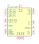
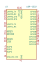

<table>
<tr>
<th>Symbol</th>
<th>Description</th>
</tr>
<tr>
<td><br>HF-A11-SMT</td><td>Description: WiFi IEEE802.11b/g/n with Ethernet Module, UART, GPIO<br>Keys: WiFi IEEE802.11 b/g/n<br>Datasheet: <a href="http://www.hi-flying.com/index.php?route=tool/upload/download&code=190ec6c62d497905ed783d140f8e5af7a753b8ab">http://www.hi-flying.com/index.php?route=tool/upload/download&code=190ec6c62d497905ed783d140f8e5af7a753b8ab</a></td>
</tr>
<tr>
<td><br>USR-C322</td><td>Description: 802.11 b/g/n Wi-Fi Module<br>Keys: WiFi IEEE802.11 b/g/n<br>Datasheet: <a href="https://www.usriot.com/download/WIFI/USR-C322%20User%20Manual%20V2.3.pdf">https://www.usriot.com/download/WIFI/USR-C322%20User%20Manual%20V2.3.pdf</a></td>
</tr>
</table>
